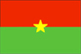

{kind=link}

|
Burkina Faso |  |
| Introduction Geography People Government Economy Communications Transportation Military Transnational Issues | ||
|
|
||
| Burkina Faso | Introduction | Top of Page |
| Background: | Independence from France came to Burkina Faso (formerly Upper Volta) in 1960. Governmental instability during the 1970s and 1980s was followed by multiparty elections in the early 1990s. Several hundred thousand farm workers migrate south every year to Cote d'Ivoire and Ghana. |
| Burkina Faso | Geography | Top of Page |
| Location: | Western Africa, north of Ghana |
| Geographic coordinates: | 13 00 N, 2 00 W |
| Map references: | Africa |
| Area: |
total:
274,200 sq km
land: 273,800 sq km water: 400 sq km |
| Area - comparative: | slightly larger than Colorado |
| Land boundaries: |
total:
3,192 km
border countries: Benin 306 km, Cote d'Ivoire 584 km, Ghana 548 km, Mali 1,000 km, Niger 628 km, Togo 126 km |
| Coastline: | 0 km (landlocked) |
| Maritime claims: | none (landlocked) |
| Climate: | tropical; warm, dry winters; hot, wet summers |
| Terrain: | mostly flat to dissected, undulating plains; hills in west and southeast |
| Elevation extremes: |
lowest point:
Mouhoun (Black Volta) River 200 m
highest point: Tena Kourou 749 m |
| Natural resources: | manganese, limestone, marble; small deposits of gold, antimony, copper, nickel, bauxite, lead, phosphates, zinc, silver |
| Land use: |
arable land:
13%
permanent crops: 0% permanent pastures: 22% forests and woodland: 50% other: 15% (1993 est.) |
| Irrigated land: | 200 sq km (1993 est.) |
| Natural hazards: | recurring droughts |
| Environment - current issues: | recent droughts and desertification severely affecting agricultural activities, population distribution, and the economy; overgrazing; soil degradation; deforestation |
| Environment - international agreements: |
party to:
Biodiversity, Climate Change, Desertification, Endangered Species, Hazardous Wastes, Marine Life Conservation, Ozone Layer Protection, Wetlands
signed, but not ratified: Law of the Sea, Nuclear Test Ban |
| Geography - note: | landlocked |
| Burkina Faso | People | Top of Page |
| Population: |
12,272,289
note: estimates for this country explicitly take into account the effects of excess mortality due to AIDS; this can result in lower life expectancy, higher infant mortality and death rates, lower population and growth rates, and changes in the distribution of population by age and sex than would otherwise be expected (July 2001 est.) |
| Age structure: |
0-14 years:
47.5% (male 2,937,285; female 2,892,107)
15-64 years: 49.59% (male 2,903,153; female 3,183,121) 65 years and over: 2.91% (male 150,688; female 205,935) (2001 est.) |
| Population growth rate: | 2.68% (2001 est.) |
| Birth rate: | 44.79 births/1,000 population (2001 est.) |
| Death rate: | 17.05 deaths/1,000 population (2001 est.) |
| Net migration rate: | -0.97 migrant(s)/1,000 population (2001 est.) |
| Sex ratio: |
at birth:
1.03 male(s)/female
under 15 years: 1.02 male(s)/female 15-64 years: 0.91 male(s)/female 65 years and over: 0.73 male(s)/female total population: 0.95 male(s)/female (2001 est.) |
| Infant mortality rate: | 106.92 deaths/1,000 live births (2001 est.) |
| Life expectancy at birth: |
total population:
46.41 years
male: 45.86 years female: 46.98 years (2001 est.) |
| Total fertility rate: | 6.35 children born/woman (2001 est.) |
| HIV/AIDS - adult prevalence rate: | 6.44% (1999 est.) |
| HIV/AIDS - people living with HIV/AIDS: | 350,000 (1999 est.) |
| HIV/AIDS - deaths: | 43,000 (1999 est.) |
| Nationality: |
noun:
Burkinabe (singular and plural)
adjective: Burkinabe |
| Ethnic groups: | Mossi over 40%, Gurunsi, Senufo, Lobi, Bobo, Mande, Fulani |
| Religions: | indigenous beliefs 40%, Muslim 50%, Christian (mainly Roman Catholic) 10% |
| Languages: | French (official), native African languages belonging to Sudanic family spoken by 90% of the population |
| Literacy: |
definition:
age 15 and over can read and write
total population: 19.2% male: 29.5% female: 9.2% (1995 est.) |
| Burkina Faso | Government | Top of Page |
| Country name: |
conventional long form:
none
conventional short form: Burkina Faso former: Upper Volta, Republic of Upper Volta |
| Government type: | parliamentary |
| Capital: | Ouagadougou |
| Administrative divisions: |
30 provinces; Bam, Bazega, Bougouriba, Boulgou, Boulkiemde, Ganzourgou, Gnagna, Gourma, Houe, Kadiogo, Kenedougou, Komoe, Kossi, Kouritenga, Mouhoun, Namentenga, Naouri, Oubritenga, Oudalan, Passore, Poni, Sanguie, Sanmatenga, Seno, Sissili, Soum, Sourou, Tapoa, Yatenga, Zoundweogo
note: a new electoral code was approved by the National Assembly in January 1997; the number of administrative provinces was increased from 30 to 45 (Bale, Bam, Banwa, Bazega, Bougouriba, Boulgou, Boulkiemde, Comoe, Ganzourgou, Gnagna, Gourma, Houet, Ioba, Kadiogo, Kenedougou, Komandjari, Kompienga, Kossi, Koupelogo, Kouritenga, Kourweogo, Leraba, Loroum, Mouhoun, Nahouri, Namentenga, Nayala, Naumbiel, Oubritenga, Oudalan, Passore, Poni, Samentenga, Sanguie, Seno, Sissili, Soum, Sourou, Tapoa, Tuy, Yagha, Yatenga, Ziro, Zondomo, Zoundweogo), however, this change has not yet been confirmed by the US Board on Geographic Names |
| Independence: | 5 August 1960 (from France) |
| National holiday: | Republic Day, 11 December (1958) |
| Constitution: | 2 June 1991 approved by referendum; 11 June 1991 formally adopted |
| Legal system: | based on French civil law system and customary law |
| Suffrage: | universal |
| Executive branch: |
chief of state:
President Blaise COMPAORE (since 15 October 1987)
head of government: Prime Minister Ernest Paramanga YONLI (since 6 November 2000) cabinet: Council of Ministers appointed by the president on the recommendation of the prime minister elections: president elected by popular vote for a seven-year term; the president may serve unlimited terms; election last held 15 November 1998 (next to be held NA 2005); prime minister appointed by the president with the consent of the legislature election results: Blaise COMPAORE reelected president with 87.5% percent of the vote, 56% of voter turnout note: President COMPAORE faces an increasingly well-coordinated opposition; recent charges against a former member of his Presidential Guard in the 1998 assassination of a newspaper editor signify an attempt to defuse chronic areas of dissatisfaction |
| Legislative branch: |
bicameral; consists of a National Assembly or Assemblee des Deputes Populaires (111 seats; members are elected by popular vote to serve five-year terms) and the purely consultative Chamber of Representations or Chambre des Representants (178 seats; members are appointed to serve three-year terms)
elections: National Assembly election last held 11 May 1997 (next to be held NA 2002) election results: percent of vote by party - NA%; seats by party - CDP 101, PDP 6, RDA 2, ADF 2 |
| Judicial branch: | Supreme Court; Appeals Court |
| Political parties and leaders: | African Democratic Rally-Alliance for Democracy and Federation or RDA-ADF [Herman YAMEOGO]; Congress for Democracy and Progress or CDP [Roch Marc-Christian KABORE]; Movement for Tolerance and Progress or MTP [Noyabtigungu Congo KABORE]; Party for African Independence or PAI [Philippe OUEDRAOGO]; Party for Democracy and Progress or PDP [Joseph KI-ZERBO]; Union of Greens for the Development of Burkina Faso or UVDB [Ram OVEDRAGO] |
| Political pressure groups and leaders: | Burkinabe General Confederation of Labor or CGTB; Burkinabe Movement for Human Rights or HBDHP; Group of 14 February; National Confederation of Burkinabe Workers or CNTB; National Organization of Free Unions or ONSL; watchdog/political action groups throughout the country in both organizations and communities |
| International organization participation: | ACCT, ACP, AfDB, CCC, ECA, ECOWAS, Entente, FAO, FZ, G-77, IAEA, IBRD, ICAO, ICC, ICFTU, ICRM, IDA, IDB, IFAD, IFC, IFRCS, ILO, IMF, Intelsat, Interpol, IOC, IOM, ISO (subscriber), ITU, MONUC, NAM, OAU, OIC, OPCW, UN, UNCTAD, UNESCO, UNIDO, UPU, WADB, WAEMU, WCL, WFTU, WHO, WIPO, WMO, WToO, WTrO |
| Diplomatic representation in the US: |
chief of mission:
Ambassador Bruno ZIDOUEMBA
chancery: 2340 Massachusetts Avenue NW, Washington, DC 20008 telephone: [1] (202) 332-5577 FAX: [1] (202) 667-1882 |
| Diplomatic representation from the US: |
chief of mission:
Ambassador Jimmy J. KOLKER
embassy: 602 Avenue Raoul Follerau, Koulouba, Secteur 4, Ouagadougou mailing address: B. P. 35, Ouagadougou 01 telephone: [226] 306723 FAX: [226] 303890 |
| Flag description: | two equal horizontal bands of red (top) and green with a yellow five-pointed star in the center; uses the popular pan-African colors of Ethiopia |
| Burkina Faso | Economy | Top of Page |
| Economy - overview: | One of the poorest countries in the world, landlocked Burkina Faso has a high population density, few natural resources, and a fragile soil. About 90% of the population is engaged in (mainly subsistence) agriculture which is highly vulnerable to variations in rainfall. Industry remains dominated by unprofitable government-controlled corporations. Following the African franc currency devaluation in January 1994 the government updated its development program in conjunction with international agencies, and exports and economic growth have increased. Maintenance of its macroeconomic progress in 2001-02 depends on continued low inflation, reduction in the trade deficit, and reforms designed to encourage private investment. |
| GDP: | purchasing power parity - $12 billion (2000 est.) |
| GDP - real growth rate: | 5% (2000 est.) |
| GDP - per capita: | purchasing power parity - $1,000 (2000 est.) |
| GDP - composition by sector: |
agriculture:
26%
industry: 27% services: 47% (1998) |
| Population below poverty line: | NA% |
| Household income or consumption by percentage share: |
lowest 10%:
2.2%
highest 10%: 39.5% (1994) |
| Inflation rate (consumer prices): | 1.5% (2000 est.) |
| Labor force: |
5 million (1999)
note: a large part of the male labor force migrates annually to neighboring countries for seasonal employment |
| Labor force - by occupation: | agriculture 90% (2000 est.) |
| Unemployment rate: | NA% |
| Budget: |
revenues:
$277 million
expenditures: $492 million, including capital expenditures of $233 million (1995 est.) |
| Industries: | cotton lint, beverages, agricultural processing, soap, cigarettes, textiles, gold |
| Industrial production growth rate: | 4.2% (1995) |
| Electricity - production: | 285 million kWh (1999) |
| Electricity - production by source: |
fossil fuel:
71.93%
hydro: 28.07% nuclear: 0% other: 0% (1999) |
| Electricity - consumption: | 265.1 million kWh (1999) |
| Electricity - exports: | 0 kWh (1999) |
| Electricity - imports: | 0 kWh (1999) |
| Agriculture - products: | peanuts, shea nuts, sesame, cotton, sorghum, millet, corn, rice; livestock |
| Exports: | $220 million (f.o.b., 2000 est.) |
| Exports - commodities: | cotton, animal products, gold |
| Exports - partners: | Italy 13%, France 10%, Indonesia 8%, Thailand 7% (1999) |
| Imports: | $610 million (f.o.b., 2000 est.) |
| Imports - commodities: | machinery, food products, petroleum |
| Imports - partners: | Cote d'Ivoire 30%, France 28%, Spain 3%, Benelux 3% (1999) |
| Debt - external: | $1.3 billion (1997) |
| Economic aid - recipient: | $484.1 million (1995) |
| Currency: | Communaute Financiere Africaine franc (XOF); note - responsible authority is the Central Bank of the West African States |
| Currency code: | XOF |
| Exchange rates: | Communaute Financiere Africaine francs (XOF) per US dollar - 699.21 (January 2001), 711.98 (2000), 615.70 (1999), 589.95 (1998), 583.67 (1997), 511.55 (1996); note - from 1 January 1999, the XOF is pegged to the euro at a rate of 655.957 XOF per euro |
| Fiscal year: | calendar year |
| Burkina Faso | Communications | Top of Page |
| Telephones - main lines in use: | 36,000 (1997) |
| Telephones - mobile cellular: | 1,503 (1997) |
| Telephone system: |
general assessment:
all services only fair
domestic: microwave radio relay, open wire, and radiotelephone communication stations international: satellite earth station - 1 Intelsat (Atlantic Ocean) |
| Radio broadcast stations: | AM 2, FM 17, shortwave 1 (1998) |
| Radios: | 370,000 (1997) |
| Television broadcast stations: | 1 (1997) |
| Televisions: | 100,000 (1997) |
| Internet country code: | .bf |
| Internet Service Providers (ISPs): | 1 (2000) |
| Internet users: | 4,000 (2000) |
| Burkina Faso | Transportation | Top of Page |
| Railways: |
total:
622 km (517 km from Ouagadougou to the Cote d'Ivoire border and 105 km from Ouagadougou to Kaya)
narrow gauge: 622 km 1.000-m gauge (1995 est.) |
| Highways: |
total:
12,506 km
paved: 2,001 km unpaved: 10,505 km (1996) |
| Waterways: | none |
| Ports and harbors: | none |
| Airports: | 33 (2000 est.) |
| Airports - with paved runways: |
total:
2
over 3,047 m: 1 2,438 to 3,047 m: 1 (2000 est.) |
| Airports - with unpaved runways: |
total:
31
1,524 to 2,437 m: 3 914 to 1,523 m: 12 under 914 m: 16 (2000 est.) |
| Burkina Faso | Military | Top of Page |
| Military branches: | Army, Air Force, National Gendarmerie, National Police, People's Militia |
| Military manpower - availability: | males age 15-49: 2,592,974 (2001 est.) |
| Military manpower - fit for military service: | males age 15-49: 1,329,995 (2001 est.) |
| Military expenditures - dollar figure: | $66 million (FY96) |
| Military expenditures - percent of GDP: | 2% (FY96) |
| Burkina Faso | Transnational Issues | Top of Page |
| Disputes - international: | none |